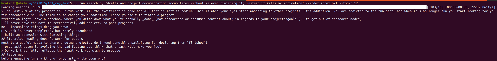

just slapping an embeding-based semantic search on your notes is pretty powerful

If you are taking notes in any kind of atomic/zettelkasten fashion, I strongly recommend running an embedding on them. I did this in two simple vibecoded python scripts, one building an index, one allowing me to search for what's aligned to an arbitrary string, e.g.:
uv run search.py "drafts and project documentation accumulates without me ever finishing it; instead it kills my motivation" --index index.pkl --top-n 12
This turns out to be a quite powerful way to find notes that are related but not obviously related to the issue at hand, in spirit of this Luhmann quote (translation mine):
Für Kommunikation ist eine der elementaren Voraussetzungen, dass die Partner sich wechselseitig überraschen können
For communication [with your zettelkasten, in this context] it is a basic precondition that the partners can surprise each other
While it would be neat to deeply embed this feature directly into the note-editing flow (or make this an actual RAG, to go with the times), for now this is quite sufficient: I just search for the quoted strings in my note-taking app (i.e. [graphirst]) and then work from there.